あなたの在り方って、
イメージできる？
自分をしっかり観てあげる、
そんな時間があってもいいよね。
話して 掘って 撮る。
ポーズも演出もなし。整えるだけ。ありのままを撮影します。
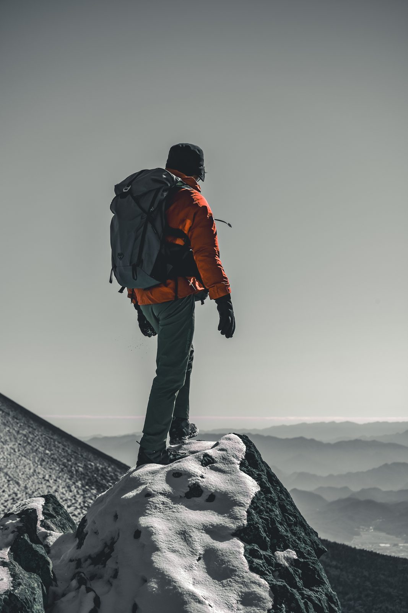
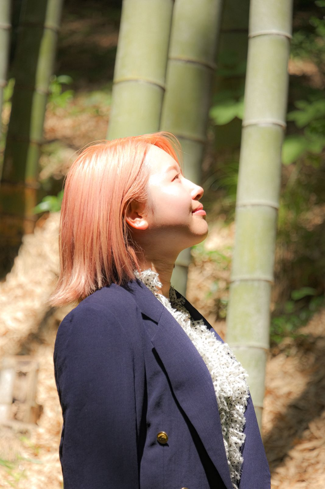
誰もが、自分らしく
表現し、創造できること。
人は誰もが、それぞれの感性や視点、表現の可能性を持っている。
けれど、正解や評価、他者との比較のなかで、自分の感覚を抑えたり、表現することをためらったりすることもある。
誰かに認められるためではなく、自分の内側から自然に生まれる表現を大切にしたい。
それが特別なことではなく、誰にとっても自然な日常になる。そんな文化を育てていきたいと思っています。
写真は、顕現したものを
定着させる。
Photography is a way to preserve a moment.
写真は、人の価値を新しくつくり出すものではないと思っています。
すでにそこにある存在や感性、その瞬間に現れた表情や空気を、目に見えるかたちとして定着させるもの。
だからこそ、シャッターを押す前の時間を大切にしています。話すこと、相手の言葉に耳を傾けること、安心して自分でいられる余白をつくること。
意味づけせず、決めつけず、ただ目の前のあなたと向き合う。写真は、その時間に顕れたものを残すための手段です。
僕が透明になるほど、
あなたが見えてくる。
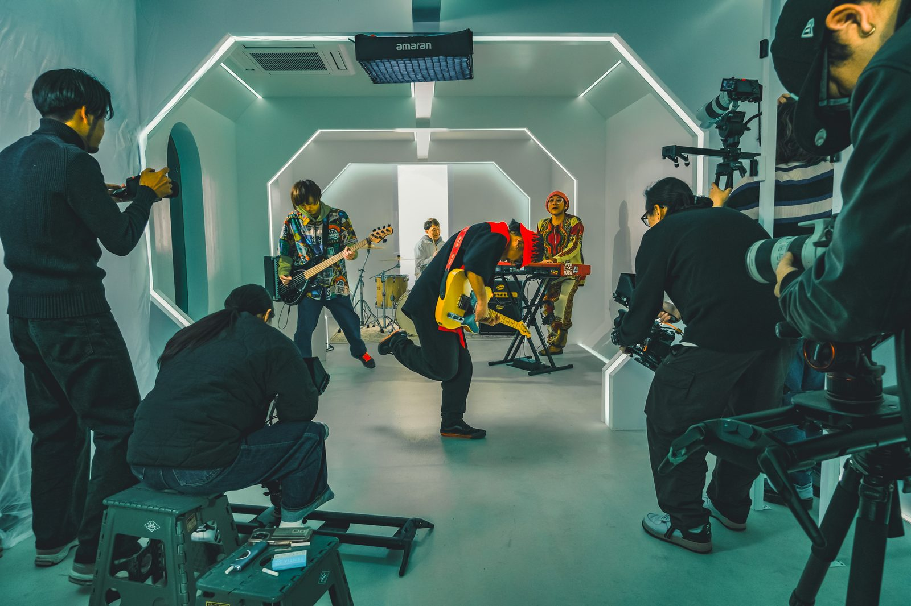
日常の生きる美しい瞬間や
表情をおさめる。
プロセスポートレートは、ポーズも演出もない撮影です。話しながら、歩きながら、その人の自然な時間を写していきます。
撮影を終えたとき、あなたの在り方が目に見えるカタチになります。
話して
最近のこと、好きなこと、どんな写真を残したいか。遠慮なく話しましょう。
掘って
話しているうちに出てきた言葉を、いっしょに掘っていきます。
撮る
途中からは、ほとんど声をかけません。ポーズも、表情の指示もしません。
写真に残る、その人の時間。
人、場所、表現。そこに流れていた時間の断片。
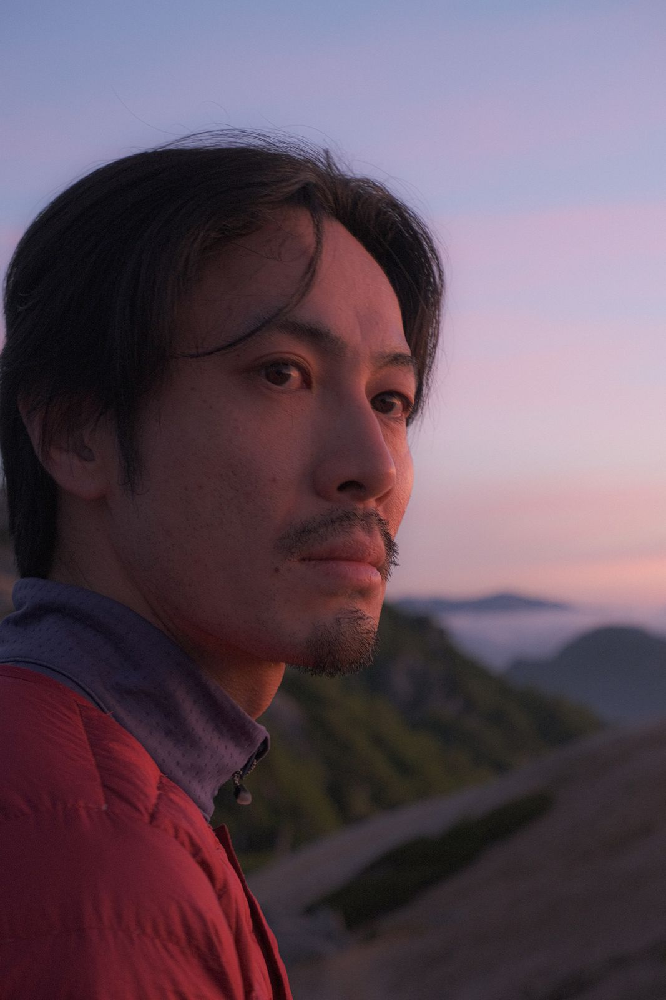
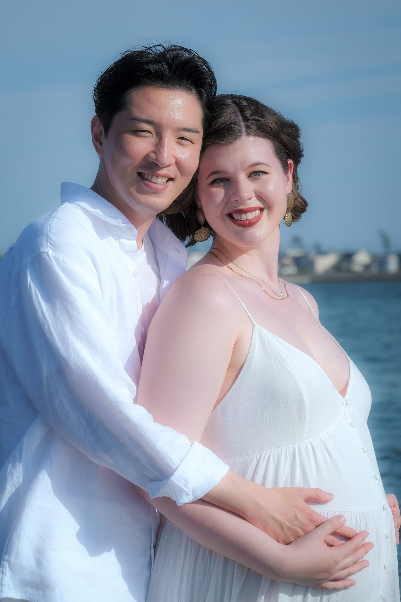
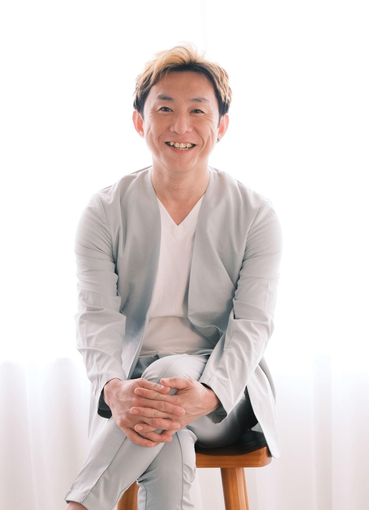
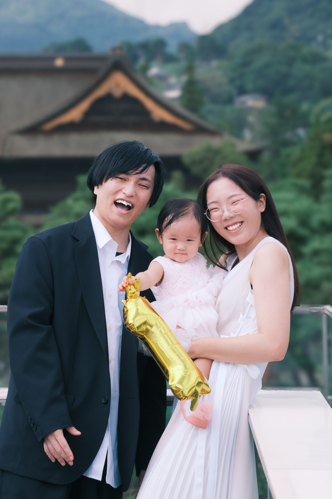
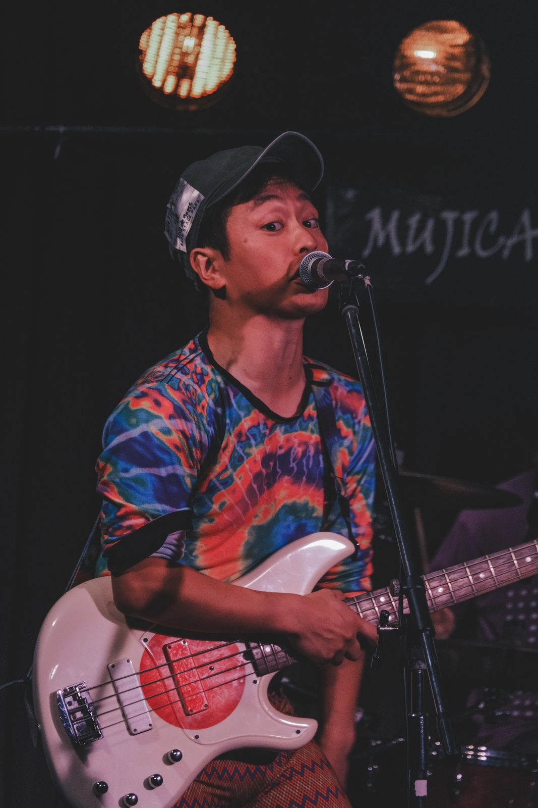
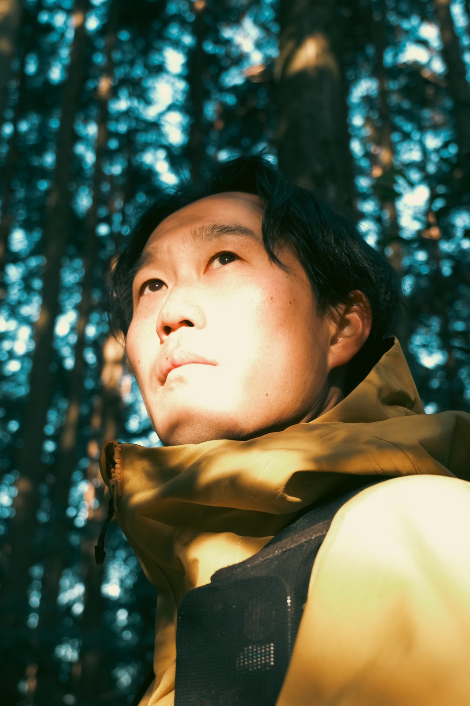
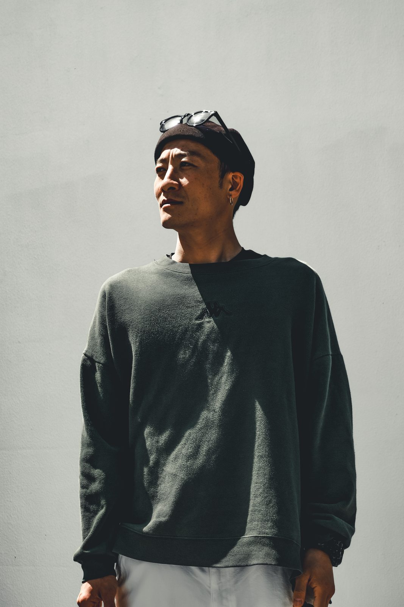
ここから先は、Ema.のこれから。
大人のポートレート撮影を文化に。
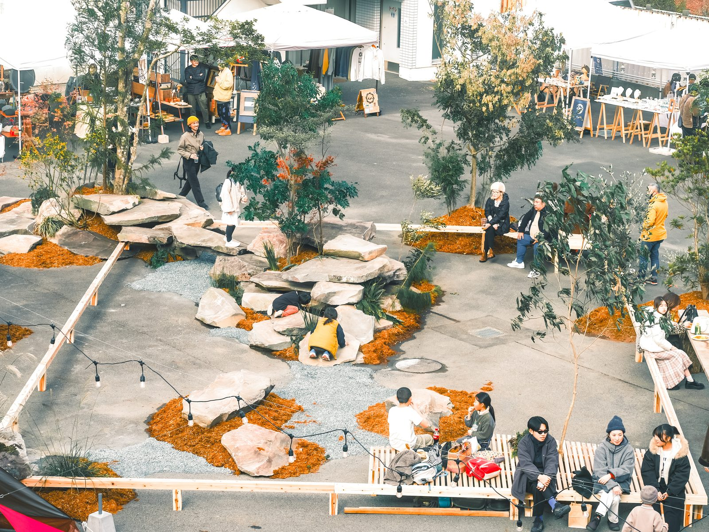
自分自身と出会い、
誰かの感性と出会う。
Personal
自分の内側にあるものが顕れる。
自分自身を観る。感じる。まだ言葉になっていない感情や、自分の感性に気づく。自分らしくいられる余白を大切にする。
Interpersonal
人と人とのあいだに、新しい何かが生まれる。
他者の表現に触れる。対話する。共鳴する。一人では生まれなかった発想や創造が、関係性のなかから立ち上がる。
これから、育てていきたいこと。
今はまだ構想の段階です。写真の活動を続けながら、いつか人が集まり、互いの感性や表現に触れられる場を育てていきたいと考えています。
人が集い、対話する。
それぞれの感じ方や考え方を持ち寄り、互いの視点に触れられる小さな集まり。
自由に表現し、つくる。
写真、絵、言葉、音、ものづくり。上手さや完成度にとらわれず、創造するプロセスを楽しめる時間。
感性が交わる拠点。
いつか、対話や創作、展示などが自然に交わり、新しい何かが生まれる場所をつくりたい。
まだ形のない構想ですが、まずは目の前の人との対話や写真の時間から、少しずつ育てていきたいと思っています。
撮影までの流れ。
問い合わせ
まずは気軽にご連絡ください。イメージが曖昧でも大丈夫です。
対話
事前に話す時間を設け、残したい時間やイメージを一緒に考えます。
撮影
話しながら、歩きながら。途中からは、ほとんど声をかけません。
整える
足さずに、写ったものを整えます。
納品
撮影後、約2週間を目安にオンラインでお届けします。
こんな方へ。
プロフィール写真やSNSのアイコンを、そろそろ撮り直したい方
アーティスト・事業主・節目を迎える人
活動や仕事を伝える写真が、しっくりきていない方
きれいに写るより、自分らしさが残ってほしい方
撮影後に届いた声。
「普段自分だけでは気づけなかった本音」
撮影前の対話について
「自分の核をゆうたさんのフィルターを通して多角的に見られて新たな発見があった」
撮影を終えて
あなたの中に、すでにあるものを
写真に撮ります。
撮影は、対話から始まります。話しながら、歩きながら、その人らしい時間をともに過ごす。ポーズをつくり込むのではなく、その人の自然な姿や没入している時間を写真に残します。
PERSONAL FLAG
一年を通して、変わっていく自分を残す。
- 撮影：年4日／写真データ：最大50枚
- プロフィール動画「結像」付き／元データのお渡しも可能／オンライン納品
全プラン別途交通費。撮影場所は事前のやりとりの中で相談して決めます。
プロフィール動画「結像」は、対話を重ねたその記録を残す映像です。
お支払いは口座振込、原則事前のお支払いをお願いしています。
お一人おひとりと向き合うため、毎月のご予約数には限りがあります。天気によっては撮影日を変更します。
迷ったら、DMで「迷ってます」と送ってください。
よくあるご質問
写真が苦手でも大丈夫ですか？
大丈夫です。ポーズや表情の指示はしません。最初にお話しする時間があるので、撮られ慣れていなくても、少しずつ自然になっていきます。
何を話しますか？
最近のこと、好きなこと、どんな写真を残したいか、などです。遠慮なく話しましょう。
元データはもらえますか？
TRACEは写真データ（最大20枚）のお渡しで、元データはありません。DOUKOUとPERSONAL FLAGは、写真（最大50枚）とプロフィール動画「結像」に加えて、元データもお渡しできます。
修正はしてもらえますか？
足さずに、写ったものを整えます。
一枚の写真から始まり、対話へ、創造へ、共鳴へ。
Ema.がなくても、Ema.から始まった文化が広がっている。
それが、この活動の行き先です。
まずは、話してみませんか。
まずは一言だけでも。「気になってます」で大丈夫です。
写真の相談はもちろん、ここに書いた考えに興味を持ってくださった方も。